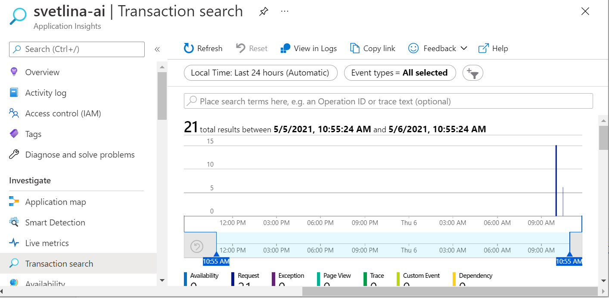
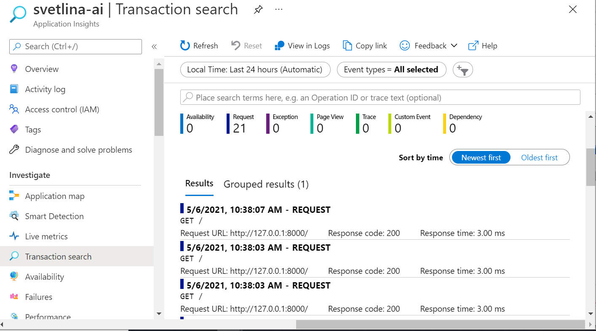
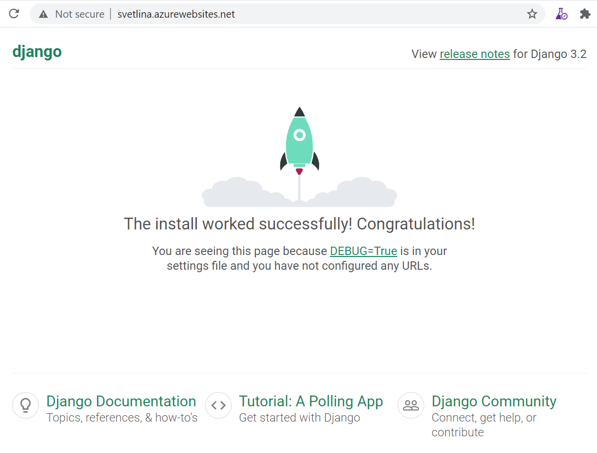
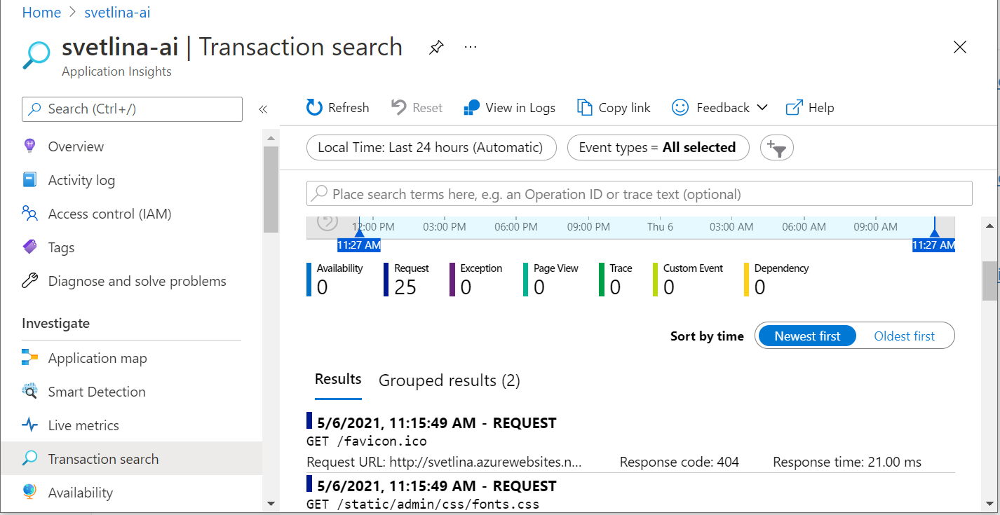

How to enable tracing in Django with OpenCensus
Preparation
- Create resource group
svetlina - Create Log Analytics Workspace
svetlina-ws - Create App Insights
svetlina-ai, connected tosvetlina-ws - Go to the App Insights Properties and note down the connection string.
- Create Web App
svetlina - Modify Deployment Center -> Source: Local Git
- Save
- Note the Git clone url:
https://svetlina.scm.azurewebsites.net:443/svetlina.git - Define user credentials and note them down.
- Clone the repository
- Provide credentials defined earlier. Git will remember in Windows Credentials store. In case you need to change them, open Windows Credential Manger -> Windows Credentials and remove the credentials `git:https://svetlina.scm.azurewebsites.net
- Python Virtual Environment:
$ git clone https://svetlina.scm.azurewebsites.net:443/svetlina.git
...
$ cd svetlina
$ py -3.8 -m venv .venv38
$ . .venv38/Scripts/activate
...
Install Python Dependencies
Create requirements.txt file:
django
opencensus-ext-django
opencensus-ext-ocagent
opencensus-ext-azure
Install the dependencies:
$ pip install -r requirements.txt
Create Django App
Generate Default Django Site
$ django-admin startproject mysite
Move the generated content from the mysite directory to the directory where the WebApp local git is cloned.
Update settings.py
You can find the settings.py file under the mysite directory.
For tracing Django requests, you will need to add the following line to the MIDDLEWARE section in the Django settings.py file.
MIDDLEWARE = [
...
'opencensus.ext.django.middleware.OpencensusMiddleware',
]
Additional configuration can be provided, please read Customization for a complete reference. In our case we need to provide exporter so that data is exported to Azure App Insights.
OPENCENSUS = {
'TRACE': {
'SAMPLER': 'opencensus.trace.samplers.ProbabilitySampler(rate=1)',
'EXPORTER': '''opencensus.ext.azure.trace_exporter.AzureExporter(
connection_string='<your-app-insights-connection-string-here>',
)''',
}
}
You also need to modify the ALLOWED_HOSTS list. Add your azure WebApp domain name:
ALLOWED_HOSTS = ['localhost', 'svetlina.azurewebsites.net']
Test the Site Locally
Start Django server
$ python manage.py runserver
Watching for file changes with StatReloader
Performing system checks...
System check identified no issues (0 silenced).
You have 18 unapplied migration(s). Your project may not work properly until you apply the migrations for app(s): admin, auth, contenttypes, sessions.
Run 'python manage.py migrate' to apply them.
May 06, 2021 - 09:46:59
Django version 3.2.1, using settings 'mysite.settings'
Starting development server at http://127.0.0.1:8000/
Quit the server with CTRL-BREAK.
...........
Open a browser at http://127.0.0.1:8000/
Open your Application Insights in Azure Portal and go to Search Transactions. You should be able to see your views.
Note: It might take some time for the transactions to show up in App Insights.


Stop the local server by pressing CTRL+C in the console window.
Publish the Site
$ git add .
$ git commit -m "initial version"
$ git push
....
The last git push command will show detailed log how the app is being built and published to the WebApp.
Test the Live Site
Open the site: https://svetlina.azurewebsites.net/

Open Transaction Search for your AppInsights in Azure Portal:

Things to Consider
Keep the AppInsight Connection String Secret
We embedded the connection string directly into the code, because we are doing a quick PoC. Also the code is not leaving our local machine and the WebApp.
When you are working on real project, secrets should be stored in Key Vault and/or as Application Setting for the WebApp.
Publish to Another Git
For example, to publish on Github, create empty repository and use the similar commands:
$ git remote add github https://github.com/ivangeorgiev/django-appinsight-opencensus.git
$ git push -u github master
This is how I published the repository: https://github.com/ivangeorgiev/django-appinsight-opencensus
Reference
-
https://github.com/census-instrumentation/opencensus-python/tree/master/contrib/opencensus-ext-azure
-
https://github.com/census-instrumentation/opencensus-python
-
https://github.com/census-instrumentation/opencensus-python/tree/master/contrib/opencensus-ext-django
-
https://docs.djangoproject.com/en/3.2/intro/tutorial01/
-
https://github.com/Basma-Elsaify/opencensus-python/tree/master/contrib/opencensus-ext-fastapi/opencensus/ext/fastapi
-
https://pypi.org/project/django-health-check/